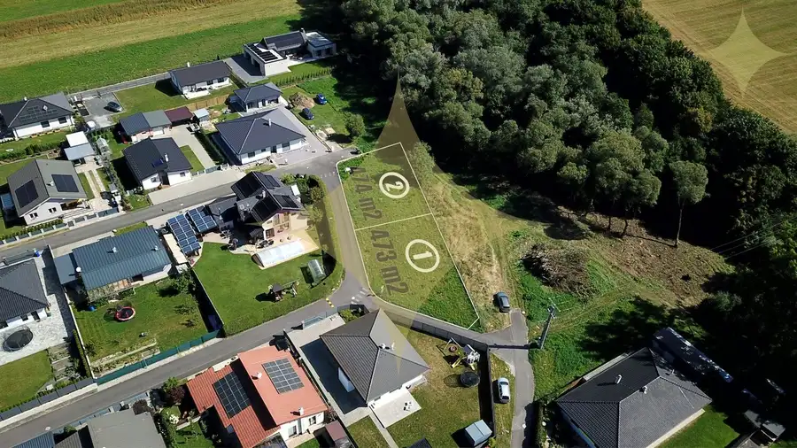
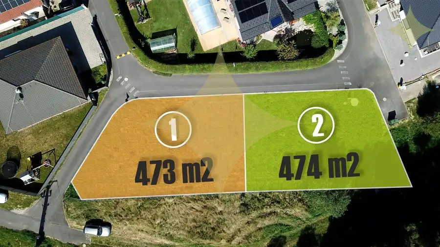
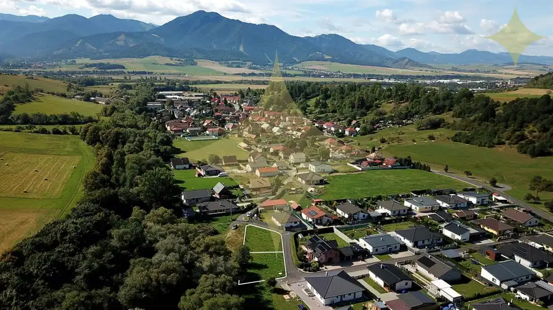
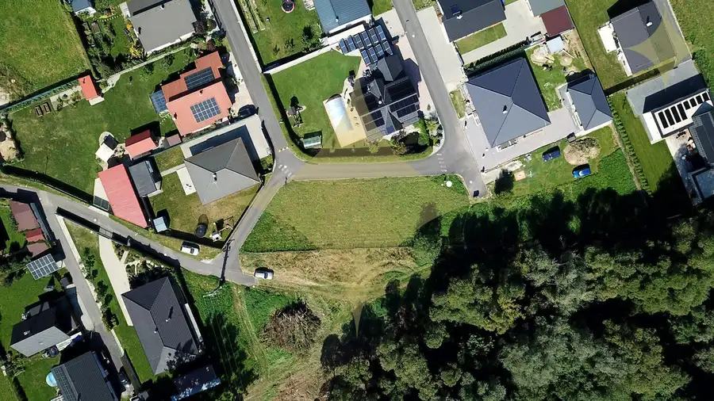
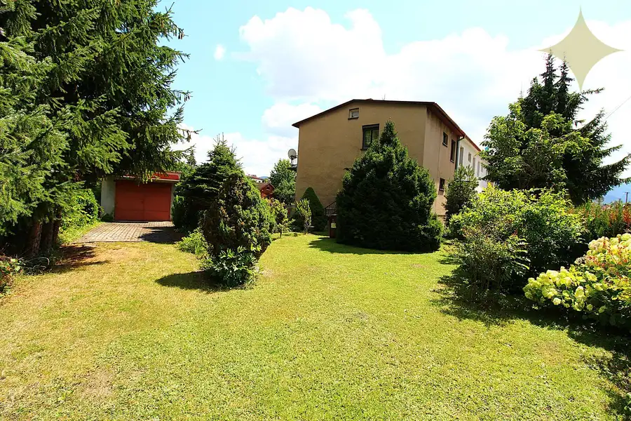
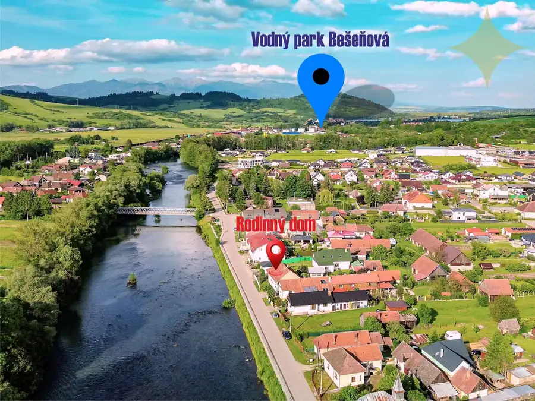
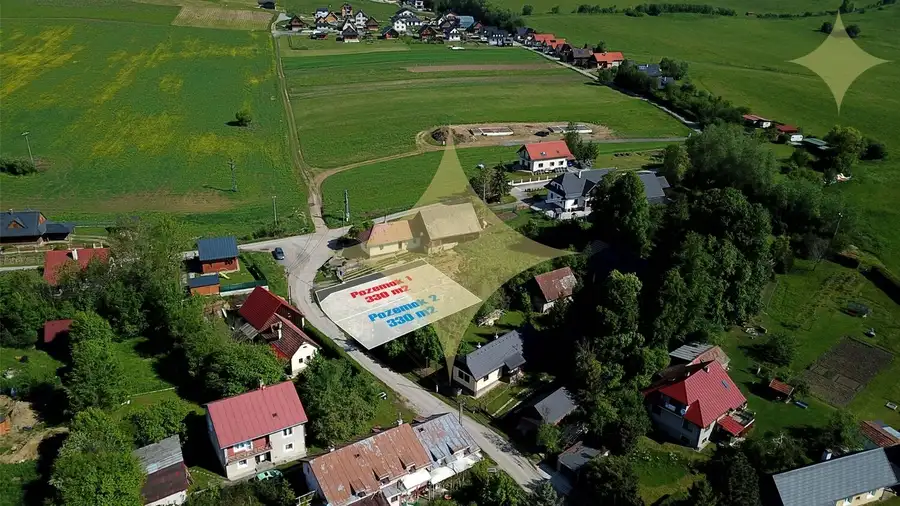

Ideálne stavebné pozemky na liptove s prípojkami pripravené na výstavbu !
Beňadiková




- Plocha473 m²
- VlastníctvoOsobné
O nehnuteľnosti
NA PREDAJ 2 STAVEBNÉ POZEMKY BLÍZKO LIPTOVSKÉHO MIKULÁŠA VO VÝLUČNOM VLASTNÍCTVE O VÝMERE 473 a 474 m2!■ Rovinaté pozemky sa nachádzajú len 5 min. od mesta - Lipt. Mikuláš v katastri obce Beňadiková s ideálnou orientáciou voči svetovým stranám.■ Výnimočné sú aj tým, že nemajú žiadneho, alebo len jedného suseda a nachádzajú sa v peknom prostredí pri potoku v novovzniknutej rezidenčnej štvrti.■ Pozemky, sú podľa určené na (IBV) výstavbu rodinných domov s koeficientom zastavanosti 0,40 a výškou 2P+P. Vďaka lukratívnej lokalite môžu mať aj rekreačný charakter.V CENE POZEMKOV JE ZAHRNUTÉ : ■ Parcela do výlučného vlastníctva s prístupom po existujúcej obecnej asfaltovej ceste s pouličným osvetlením■ Elektrické prípojky ukončené elektromerovými skrinkami■ Vodovodné prípojky ukončené vodomernými šachtami■ Kanalizačné pripojky s revíznymi šachtami■ Optický internet■ ÚPI■ Kompletný právny a fin. servis, správne poplatky, poradenstvo.■ POZEMKY JE MOŽNÉ ZLÚČIŤ - PODĽA STAV. ZÁMERU KUPUJÚCEHO■■ PREDAJ ZABEZPEČUJE: Štefánia Horská +421 903 138 497, stefania.horska@premiumliving.sk ■■
Parametre
- Druh
- Pozemok pre rodinné domy
- Dátum zverejnenia
- 21. 09. 2026
- Elektrina
- Na pozemku, Na pozemku - 230 V, Na pozemku - 400 V
- Funkčné využitie
- Výstavba rodinného domu
- Odpadové vody
- Na pozemku - Kanalizácia
- Plocha pozemku
- 473 m²
- Plyn
- Nedostupné
- Pripravenosť k výstavbe
- Schválené v územnom pláne
- Terén pozemku
- Rovinatý
- Typ
- Predaj
- Vlastníctvo
- Osobné
- Voda
- Na pozemku
Kde to je


Mohlo by Vás zaujímať

DomNové 236 900 €Rodinný dom v perfektnom stave s veľkým pozemkom blízko centra mesta lipt. Mikuláš. Liptovský Mikuláš 150 m²
DomNové 129 000 €Rodinný dom na liptove - neďaleko aquaparku za super cenu ! Ivachnová 148.19 m²
PozemokNové 42 000 €Hľadáte malý stavebný pozemok pre chatku, modulárny, alebo mobilný dom na Liptove ? Ižipovce 330 m²